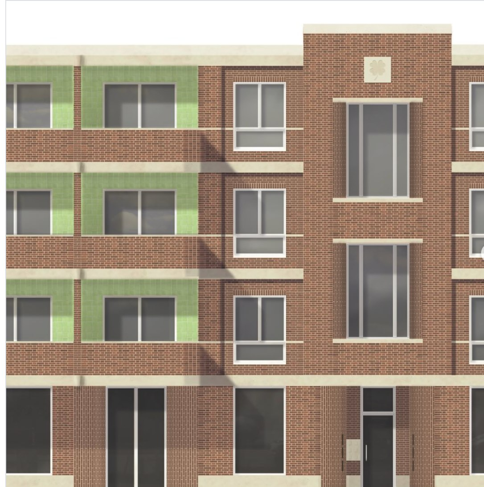
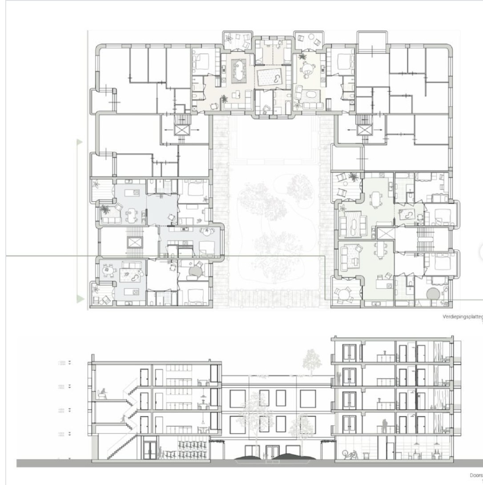
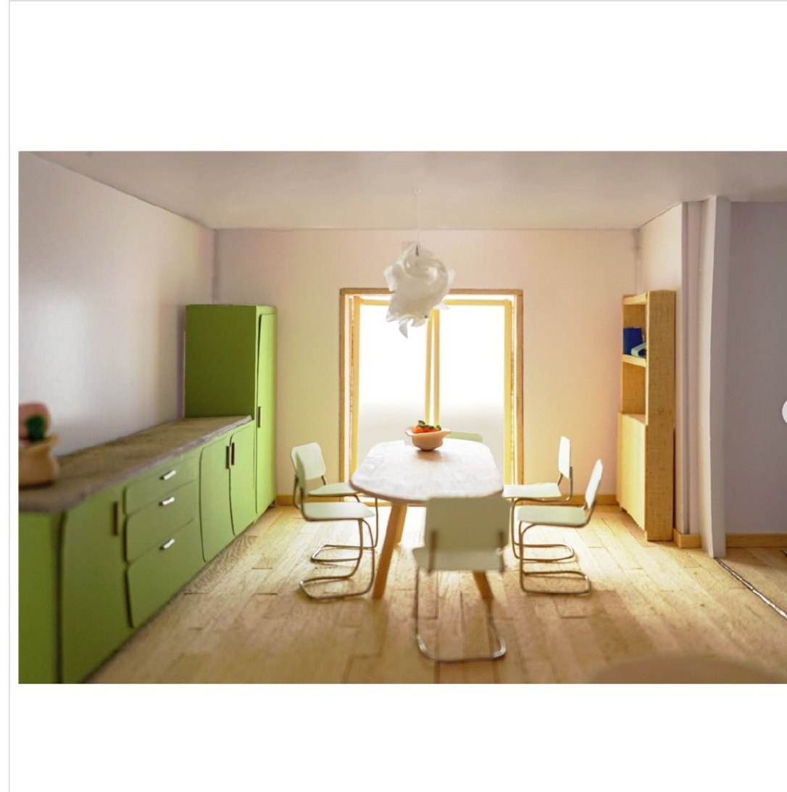

Dit project, afgerond tijdens mijn bachelor Architectuur, richtte zich op "gezinsvriendelijk wonen". De ontwerpopgave draaide om de sociale duurzaamheid van gebouwen: door hoogwaardige woningen te creëren waar bewoners zich echt thuis voelen, blijft een gebouw langer in goede staat.
We pakten deze opgave aan door de behoeften van drie verschillende gezinstypen te analyseren. Deze inzichten werden vertaald naar drie verschillende plattegronden, met nadruk op hoogwaardige ruimtes. Het resultaat is een ontwerp dat niet alleen functioneel is, maar ook het welzijn en woongeluk van de bewoners vergroot.
In samenwerking met Laura Savenije en Ugne Koelewijn, onder begeleiding van Niels van Ham en Hinke Majoor, gecoördineerd door Ninke Happel, Floris Cornelisse en Paul Verhoeven.


